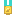
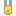
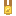
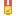
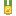

There are 50 achievements. They are earned in every copy of the game and kept on the device you play on, so every world you play adds to one list; the Achievements button on the title screen and in the pause menu shows them as medals, grey until earned, with the day and the world. A world that already did these earns them when it loads. The test world never earns any. The Steam copy reports the same achievements to Steam.
Your village
Home Again
Rebuild the abandoned village with the Quartermaster
Growing Town
Grow your village into a town
City of the Realm
Grow your village into a city
Master Merchant
Raise a village shop to level 3
The wild
Animal Friend
Tame your first animal
Falconer
Tame a hawk, an eagle or an owl

Angler
Catch 25 fish
Bug Collector
Catch an insect with the bug net
Ores

First Spark
Mine coal
Iron Will
Mine iron ore
Silver Lining
Mine silver ore
Gold Rush
Mine gold ore
Diamond in the Rough
Mine a diamond
Mythril Deep
Mine mythril ore in the sky realm
Adamant
Mine adamantite ore in the magma realm
Storm Catcher
Mine storm ore
Crafting
Handy
Craft a workbench
Smelter
Craft a furnace
Iron Age
Craft an iron tool, weapon or armor
Craftsman
Craft 100 items

Gemsmith
Craft a gem weapon
Bombs Away
Craft a bomb
Gear
Adamant Arms
Own an adamantite tool, weapon or armor
Master of Arms
Own the top of every upgrade line: tools, weapons, rods and armor
War
Recruit
Hire your first soldier
Company
Have 10 soldiers in your army

Full Battalion
Have 20 soldiers in your army
Veteran
A soldier of yours reaches Veteran rank
Hundred Foes
Defeat 100 enemies yourself
Siege Engineer
Deploy a war machine
Tower Taken
Capture an enemy watchtower, outpost or keep
Conqueror
Conquer an enemy faction
Building
Homesteader
Build a wooden hut
Watchman
Build a stone watchtower
Keep Builder
Build a stone keep
Barn Raiser
Build an animal pen
Farmstead
Build a farmhouse

Mason
Place 1,000 blocks
Exploring
Sky Walker
Reach the sky realm
Into the Fire
Reach the magma realm
Deep Delver
Dig down to the deepstone
Treasure Hunter
Open 10 chests found in the world
Bosses
Beast Tamer
Defeat the Goblin Beastmaster
Tower Breaker
Defeat the Archmage
Fire Quencher
Defeat the Magma Wizard
Ogre Slayer
Defeat Grukk the Ogre King in the orc cave
Sea Legend
Defeat the Kraken
Above the Clouds
Defeat the Sky Ranger
Heart of the Magma
Defeat the Magma Knight
The dragon
Dragon Slayer
Slay Vorthax the dragon
Counting
Kills count enemies you defeat yourself; blocks placed, items crafted, fish caught and chests opened are counted in each world from Beta 0.9.141 on. "Master of Arms" means the top tier of every upgrade line: tools, weapons, fishing rods and armor.